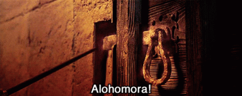
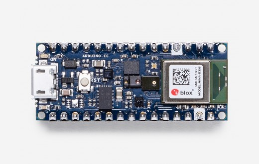
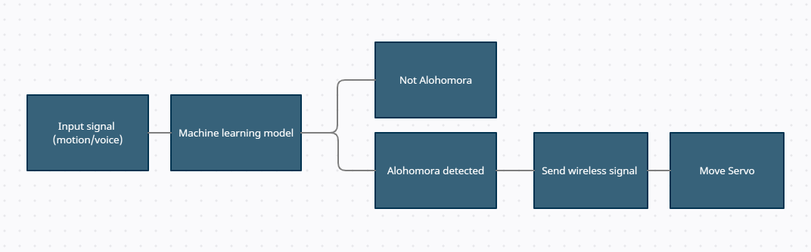

In this project, I developed a system that can detect the Alohomora motion and open a (mystery) box.
Purpose and Background
My good friend's girlfriend is an avid Harry Potter fan. I decided to help him create something a little special for her birthday. We decided to jointly
create a wand that would open a box once the Alohomora spell is detected. I was in charge of the electrical/programming side of things.
If you're unfamiliar with Harry Potter, the Alohomora spell is one of the most famous spells in the series. The spell opens up something that
is locked.
The official way to use this spell is a backwards S hand-motion and to say Alohomora.


The Arduino BLE Sense
The obvious way to solve this problem is to use an Arduino to detect the motion of the spell and send a wireless signal to another Arduino
to open a box. Luckily, at the time of starting this project, the Arduino BLE Sense had just been released.
This Arduino is particularly well-suited to the task, since it has both an on-board accelerometer and microphone for motion and sound detection.
Furthermore, lots of work has been released on creating and deploying models for these tiny embedded systems
(TinyML is a good place to look if you're interested)
System Design

The general idea behind the system is to monitor the input signal (motion or voice) continuously and make a classifcation on that signal
(not Alohomora or Alohomora). Once that signal is detected, a wireless signal is sent to another Arduino that is attached to a servo.
The servo then moves and allows opening of a box.
Testing
Here's a (very) rough video taken on Snapchat of the wand working. We only used the wand handle, so the official wand looks much nicer. A better video will be taken
sometime in the near future (hopefully).
Future Work and Code
There's still work to be done on the wand. While it is functional with just motion data, we would like to incorporate voice data
as well (or just voice data, since it will be more specific to the user). This will be in progress over the next year or so.
You can check-out the code for this project if you're interested in my GitHub.